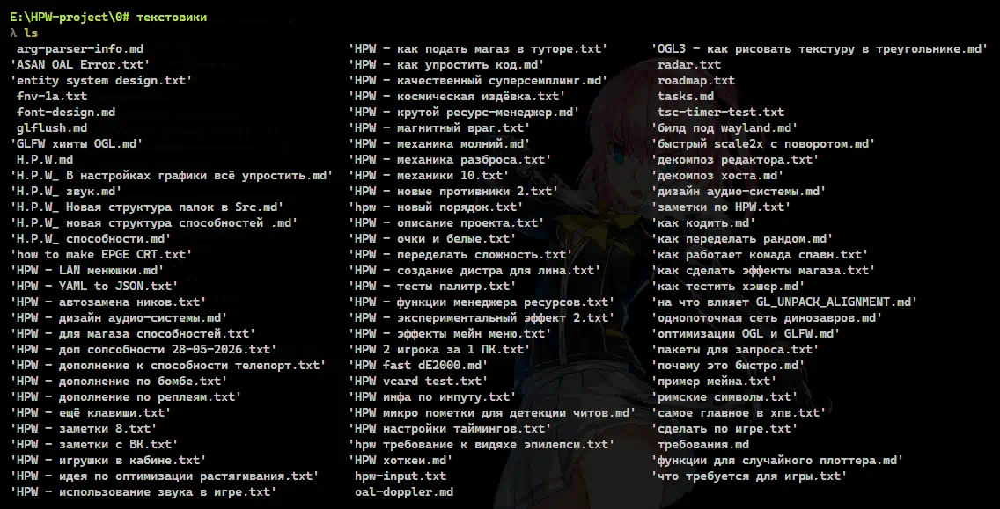

Сгрёб в кучу для удобства. Текстовики где от 3 до 200 задач по игре. Это всё разгребать без исключений.
Про чё заметки
За 3 года накопилось 86 заметок, в них: чё делать по игре; каких противников добавить; всякие механики игры. Показывать содержимое не буду - сюрприз. Все завершённые файлы я удалял, поэтому неизвестно сколько заметок было до этого. Всё валялось в разных папках, но я поиском нашёл .txt/.md и вытащил в общую папку.
Красноглазые аутисты предпочитают собирать потом весь этот хлам в общую вики-библиотеку в каком-нибудь Obsidian/Tatuin/Doxygen/Docusaurus и тратят на это несколько дней жизни чтобы запутать самих себя - для меня нет лучше TODO-листа чем бумажка с ручкой, поэтому единственная уважаемая прога это Notepad++. Соблазн конечно есть привязать один файл к другому или объёдинить всё в один общий файл, но я на это времени больше потрачу чем на саму игру.
В геймпеде всегда советуют делать только важные вещи, а остальное оставлять на потом, поэтому не удивительно что большинство игор выходят недопиленными огрызками. Если я что-то когда-то придумал, то я это добавляю даже спустя 4 года после того как придумал. В игре всё важно - каждая мелочь подмечается игроками, даже возможность сделать никнейм пустым или поставить автофреймскип на 30 кадров. Все эти 86 блокнотиков должны быть полностью обработаны без исключений.
